01 / 12 : jan to mar 2026
feel lighter
26 posts
- client
- BetterHelp
- my role
- creative direction, copy + design
- deliverables
- organic social content
- year
- 2026
the brief
feel lighter frames therapy as a way to care for your whole self in 2026: relationships, anxiety, work and goals. it speaks to people setting new year goals and people held back by stigma.
my approach
i wrote for people carrying something heavy they can't name yet. rewrite the stigma, awareness without action and the invisible wall say the hesitation out loud, so no one has to explain it first. the therapist take series (dating, caregiving, the sandwich generation) put clinicians' voices on pressures people carry quietly. each post follows one idea: name the feeling, normalize it, point to what helps.
pinned posts
3 posts open piece8 slidespinned posts
open piece8 slidespinned posts8 slides

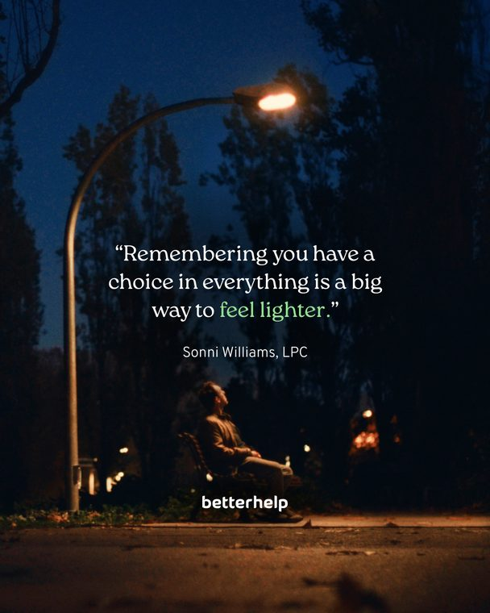
open piece2 slidespinned posts2 slides

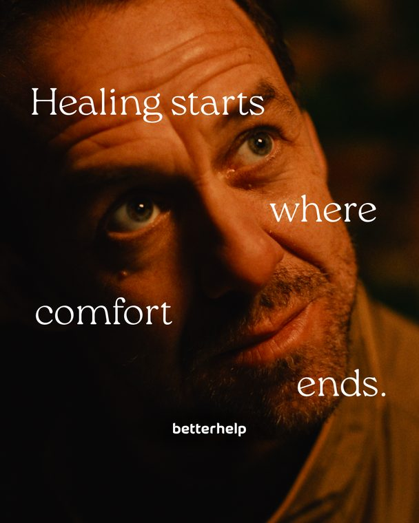
open piecesingle postpinned postssingle post
january
9 posts
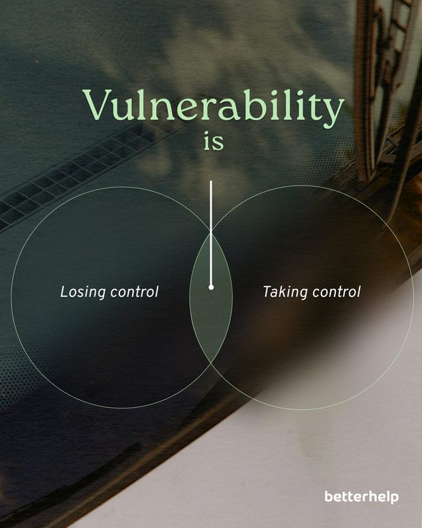
open piece5 slidesjanuary5 slides

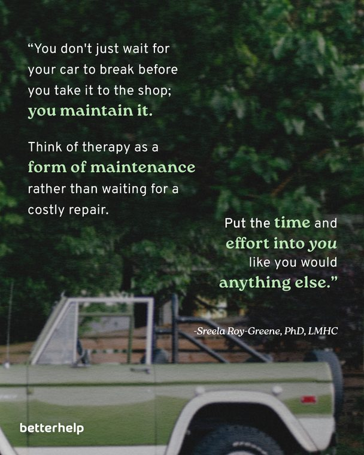
open piece7 slidesjanuary7 slides

8 slides

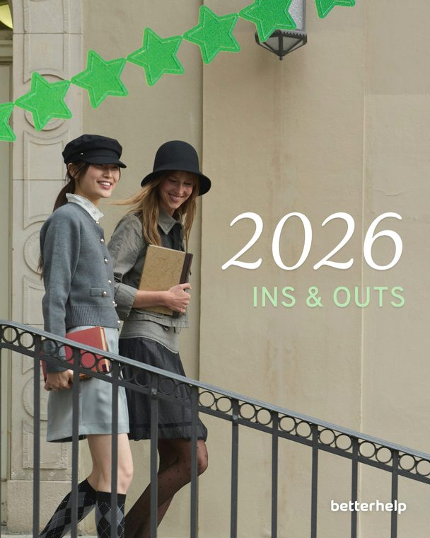
open piece3 slidesjanuary3 slides

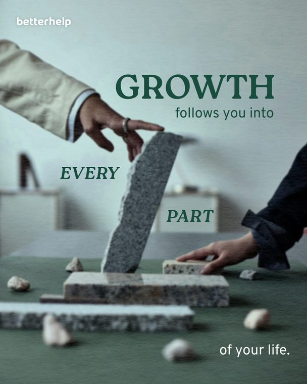
open piece7 slidesjanuary7 slides

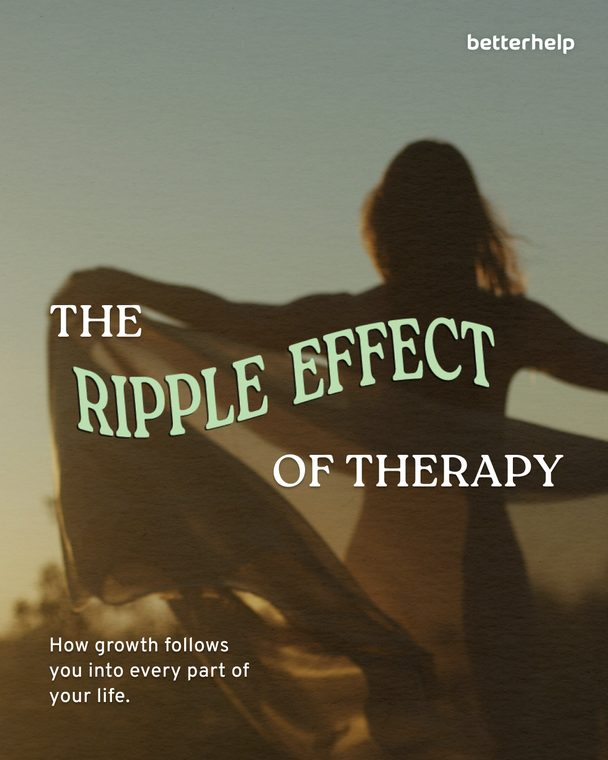
open piece7 slidesjanuary7 slides

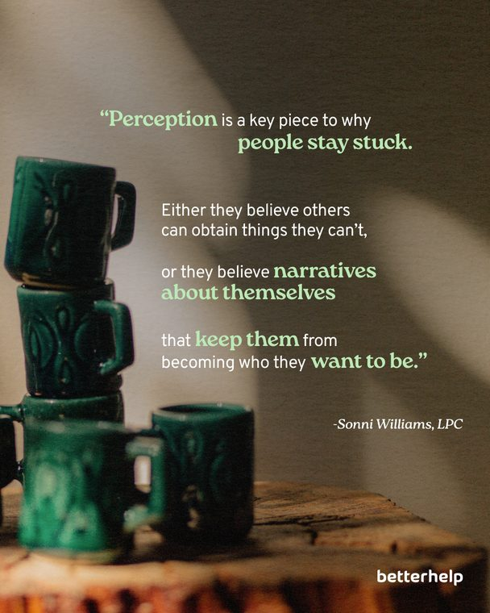
open piece4 slidesjanuary4 slides

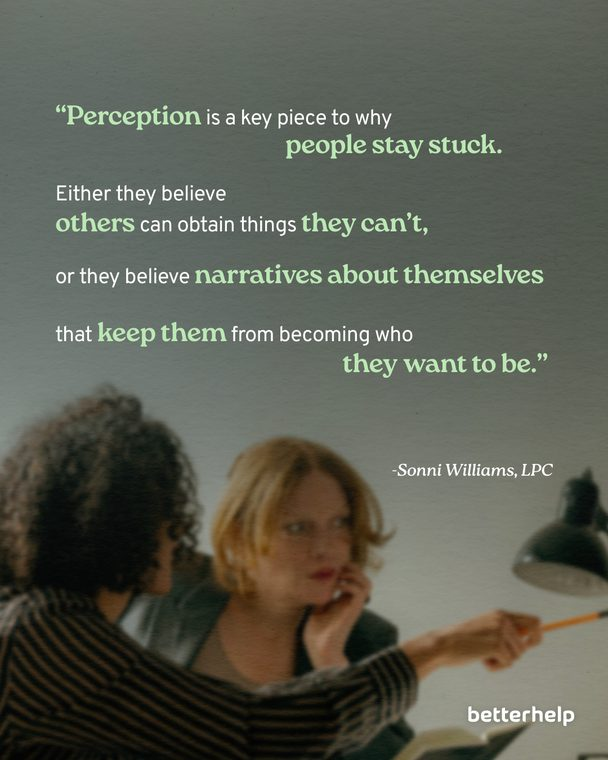
open piece4 slidesjanuary4 slides

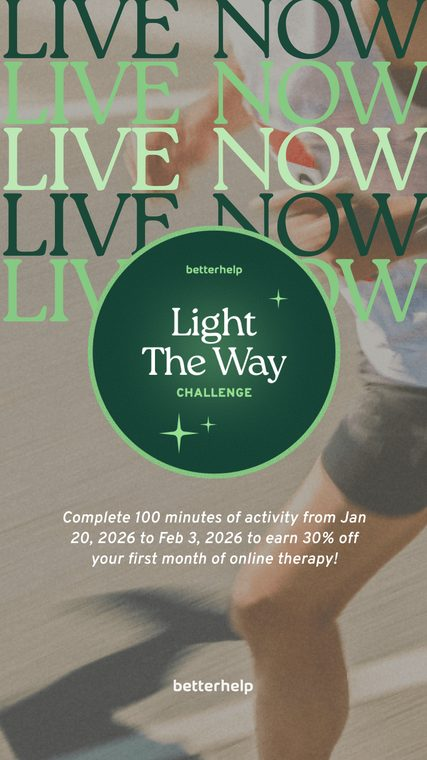
open piece3 slidesjanuary3 slides
february
11 posts
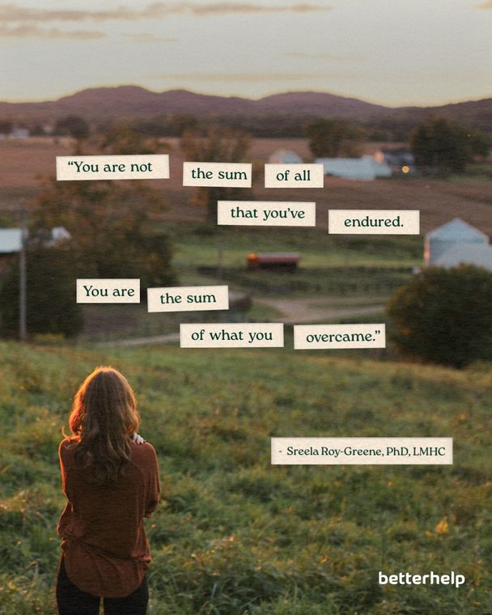
open piecesingle postfebruarysingle post

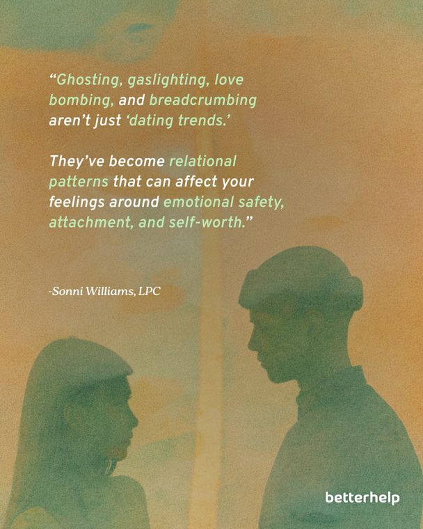
open piece7 slidesfebruary7 slides

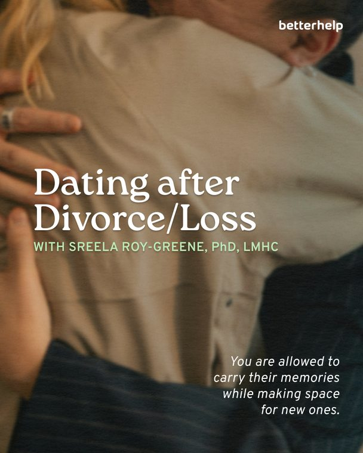
open piece6 slidesfebruary6 slides

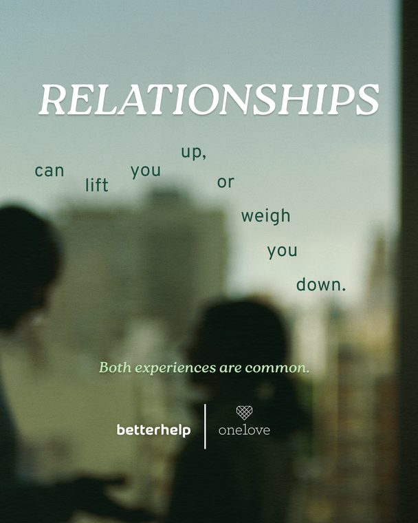
open piece4 slidesfebruary4 slides

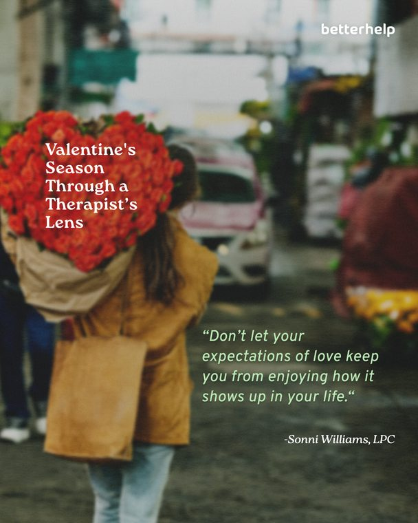
open piece7 slidesfebruary7 slides

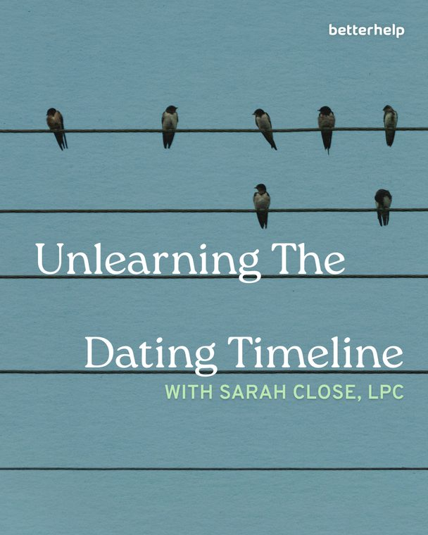
open piece7 slidesfebruary7 slides

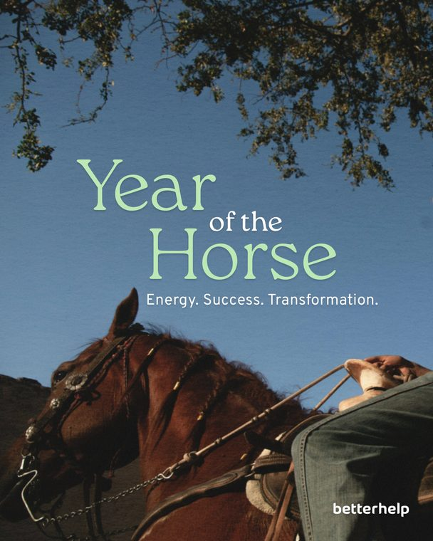
open piece5 slidesfebruary5 slides

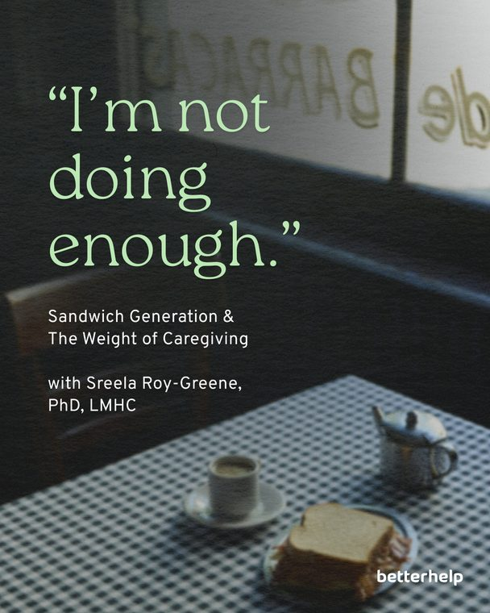
open piece6 slidesfebruary6 slides

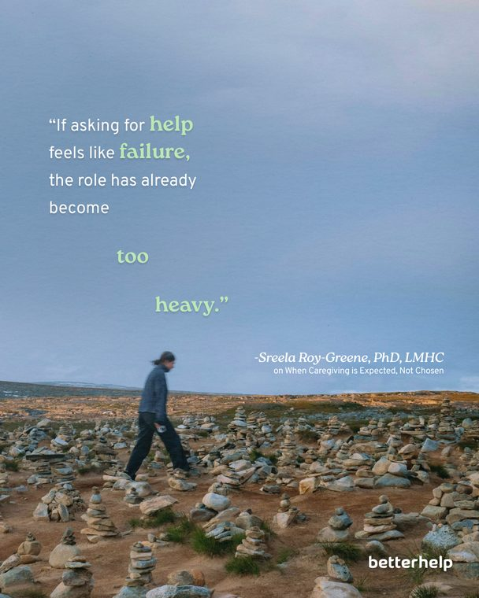
open piece6 slidesfebruary6 slides

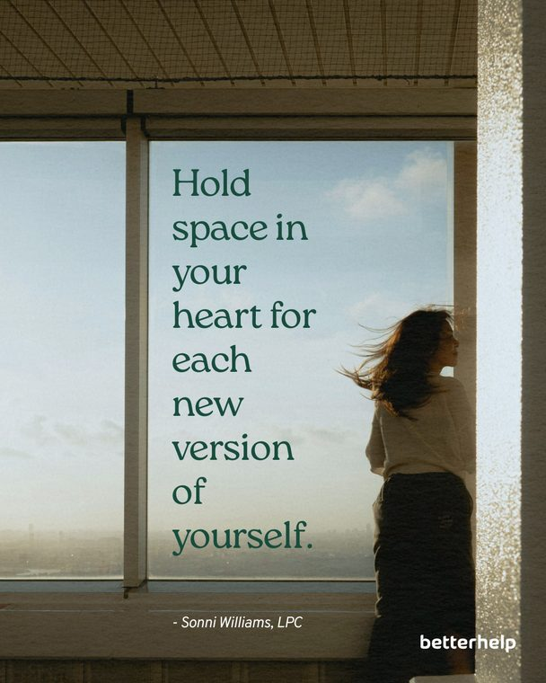
open piece3 slidesfebruary3 slides

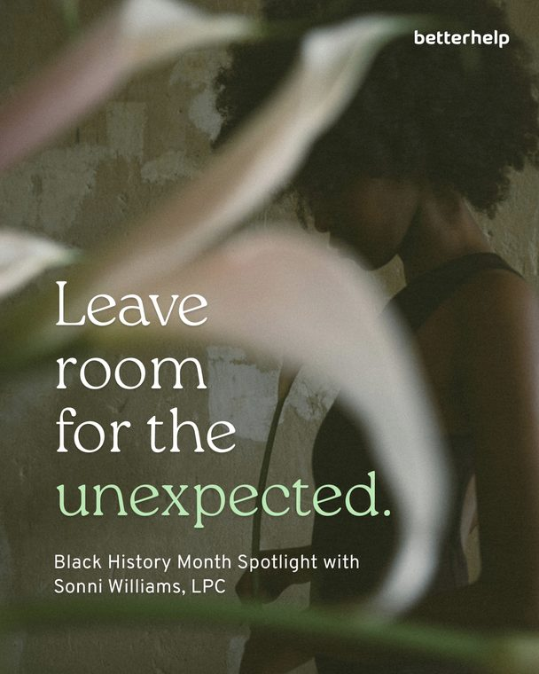
open piece5 slidesfebruary5 slides
march
3 posts
11 slides

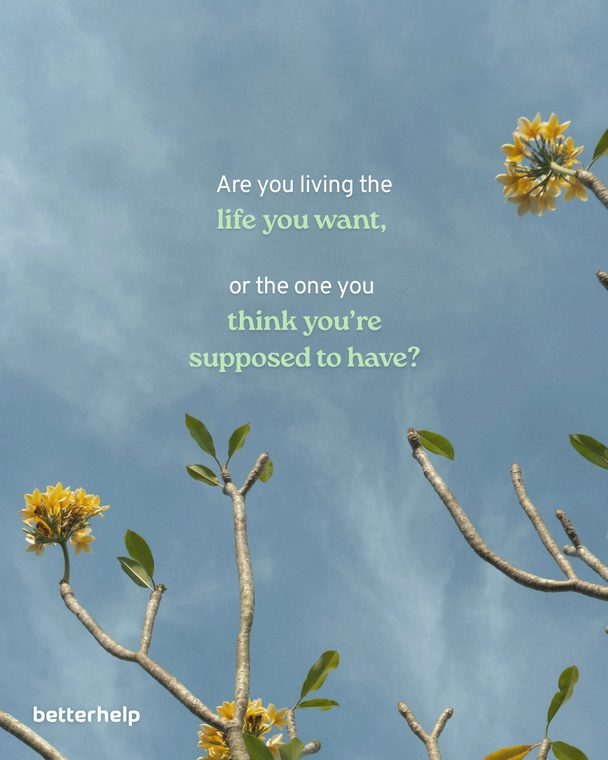
open piece5 slidesmarch5 slides
reel · 9 seconds